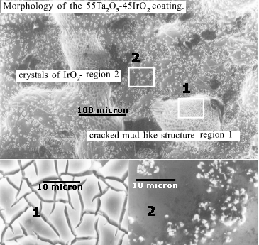
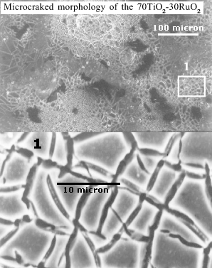
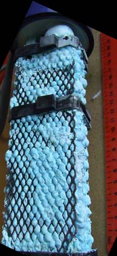
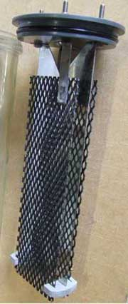
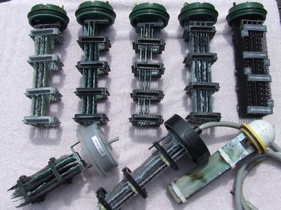

The pictures of MMO structure are from J. Braz. Chem. Soc. Vol.13 No.3 São Paulo. June 2002
 
MMO Anodes are available to purchase from corrosion control companies, pool chlorination companies, sewage treatment companies and others. They have impressive life spans when used properly. Corrosion control Anodes have lifttimes of years at current densities that are lower (in Brackish water) that what you would use at in a Chlorate cell. The coatings on corrosion control Anodes will be geared toward corrosion control (Oxygen Evolution) as opposed to Chlorate making but it would be fair to assume that they will have long lifetimes in the Chlorate cell and will make Chlorate efficiently. In fact the higher the salt concentration the longer the life. The MMO is cheap if you can purchase in small amounts. Minimum orders may apply. There is a good article at the bottom of this page from Platinum Metals Reviews if the reader is interested in the development of the MMO Anode.
Producer info. on corrosion control MMO Anodes (local to this page)
There is a good primer on MMO in general and what types are used for what purposes here.
|
http://www.directpoolsupplies.com.au/prod646.htm Supplier of Sal Chlor Anode assembly product . A pic. of this Anode is here. It may not be an MMO Anode, but a bipolar Pt based Anode. Quote: The Salchlor Anode uses precious metals (not listed on their website) on a titanium substrate. Read the thread at www.sciencemadness.org/talk/viewthread.php?tid=5050&page=2 |
Pool Chlorination devices are often dumped when in fact the actual Anodes and Cathodes of the device are OK. They may have salted up or perhaps the power supply failed. They can be had from company's supplying Chlorinators as scrap. An example from XENOID is shown below.

It is difficult to find as much info on MMO as on the other Anodes regarding current densities and temperatures used in Chlorate cell.
Current density used in Chlorate cells are in the region of 300mA/square cm. Temperature in industry (pH controlled cells), is in the region
of 70°C to 80°C. There is a Thesis in the further reading section regarding MMO in modern Chlorate cells.
MMO is very rugged when used properly and can last 10 years in commercial plant. It can be used at high temperatures which favour Chemical Chlorate formation (in pH controlled cells). They can also be used to take
the Chloride level low (50g/l) without undue damage to the Anode. This is an advantage if trying to take solid Sodium Chlorate out of solution. It is probably better to keep above 100g/l Chloride if you are trying to maximize Anode lifetime.
The anti corrosion Anodes (Ir + Ta Oxide) are designed for use in very low Chloride situations. It may be OK to use them in Chlorate cells with low Chloride content without undue erosion but CE will obviously suffer. Remember that they are used at very low current densities when being used as corrosion control Anodes in very low salt concentration mediums.
When the Anode in installed in the cell it should be surrounded sensibly with Cathode(s) so that the current is evenly distributed on the Anode. If you place just one Cathode in the cell this will give a greater current density on the side close to the Cathode which may have implications for Anode erosion if you are running the Anode at high current densities. Some wire type Anodes have a Copper core for carrying current. This can be sealed by drilling out the bottom half inch of Copper and filling with sealer.
See here for a study of an MMO Anode in a Chlorate cell that was run all the way to very low Chloride concentration.
Wire MMO (Anit corrosion Anode) installed in cell
The wire Anode (above link) was used in a cell in an attempt to make Perchlorate. Current density on Anode
was 120mA/cm squared in a 0.5 liter cell containing 250grams Na Chlorate. 2 grams NaF where added to cell.
Chlorate was twice recrystallized to give a low Chloride concentration. The cell was run
for approx. 25 days at one Amp. No Perchlorate formed. The (small) Chloride concentration (as guesstimated with a visual Silver Nitrate test) did not seem to diminish.
When the Anode was examined after the run it was
noticed that the black coating on the Anode had been removed in places and where it was not removed it could
be simply rubbed off with a cloth. There was still an active coating on the Anode though as it continued to
emit gas when put into a Chlorate cell. There was no noticeable rise in cell voltage.
There are a large amount of reports of MMO Anodes that stop functioning after a relatively short time in cells. It is believed this is caused by impurities in the cell liquor. There is a very good discussion regarding impurities in Chlorate cells to be found in Effects of Electrolyte Impurities in
Chlorate Cells.
Keep cell liquor as free as possible from impurities.
According to www.corrpro.com MMO should not be used in electrolytes containing Barium or Cadmium.
According to Encyclopedia of Chemical Processing and Design, Vol 51, 1995 page 146, Barium is a poison to Noble Metal or Noble Metal Oxide Anodes and may even reduce there lifetimes.
According to US Patent 7,250,144 (July 2007) Fluorine additive can damage Chlorate Anodes (MMO, since it is a modern patent).
There are a huge variety of Patents for MMO (DSA) Anodes using TiO2 + Nobel metal Oxides. Nobel metal Oxides can be obtained from some photographic supply stores, eg. http://www.artcraftchemicals.com
US Patent 4267025 depicts an MMO Anode made from Ti, Platinum Group Oxides + Tin Oxide that is suitable for Perchlorate production.
There's plenty of further reading regarding MMO Anodes in the
Platinum Metals review journal.
There is an article depicting the
development of the MMO Anode in PMR 1998 (42) 2 (Journal article at above link).
It is also available
here (local copy, 994Kb PDF)
There is an article in
PMR Volume 52 Issue 3 July 2008 Pages 177-185 describing the use of MMO for Pool Chlorination and water disinfecting.